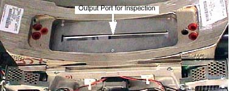

Operating Documentation
Direction 5181178-800, Rev# 16
BrightSpeed Select Service Methods Gen
Module Version 1.0, Version Date 2/16/07
Operating Documentation |
Image Artifacts have been generated and reported on some CT systems due to the contamination of the bowtie and the primary copper filter. This contamination is from the lubricating grease used on the filter positioning drive screw assembly.
The following information may apply in general to all 46-296300G5, 2214768, 2214768-2 and 2214768-3 Collimators.
The inspection takes less than 5 minutes. It consists of simply examining the Copper primary filter.
Bright Flashlight
Remove Mylar Scan Window
Launch Diagnostic Data Collection, DDC, from the Service Desktop.
Select [DIAGNOSTICS].
Select [DIAGNOSTIC DATA COLLECTION].
Select [POSITION TUBE].
Enter 180 and execute.
Select [STATIC X-RAY OFF].
Filter[AIR].
Slice Collimation Largest Aperture, 4 x 5.00 for example.
Select [ACCEPT RX].
Using a flashlight, inspect the primary copper filter by looking down into the collimator output port. See Illustration 1.
| NOTE: | The copper filter should be clean, dent and scratch free. Discoloration is acceptable. |
If contamination is visible (see Illustration 2), proceed to Step .
Illustration 1: Collimator Output Port

Illustration 2: Extremely Contaminated Copper Filter
Click here to access Collimator Cleaning Procedure.
| NOTE: | Allow DAS and Detector to warm up for 1 hour. |
Perform Fastcal, twice.
Perform Image Quality Test Procedures, or both 48cm Phantom Image Series Verification and 20cm QA Phantom Image Series Verification.
Evaluate Image Quality and ensure system meets specifications both numerical and visually.
Perform CT Number Adjustment if necessary.
Image Quality Testing may fail for one or more of the following reasons:
Tube Alignments were performed with contamination present.
Check and adjust tube alignments as necessary.
Perform Detailed Phantom Calibrations and CT Number Adjustment.
Detailed Calibrations were performed with contamination present.
Reload Phantom Calibrations from Saved State and perform Fastcal twice or perform Detailed Phantom Calibrations and CT Number Adjustment.
Beam Obstruction may be present on Tube Output Port or chamber between Tube and Copper Filter.
Remove Tube and Inspect this area for beam obstructions. Clean or replace parts as needed.
Component failure within the Image Chain in addition to the collimator contamination.
Troubleshoot accordingly.